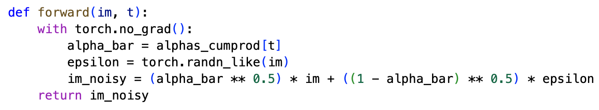

Project5: Fun With Diffusion Models!
Part A: The Power of Diffusion Models!
Part A.0: Setup
random seed：100
text prompts： 'a high quality photo', 'a photo of a dog', 'a rocket ship'

Part A.1: Sampling Loops
1.1 Forward Process
noisy_im = forward(im, t) function
